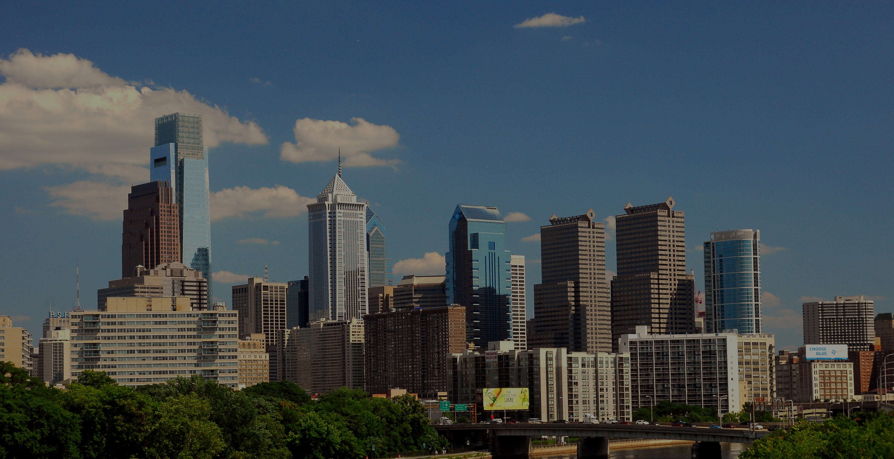

So you want to move to Philly, but not sure which neighborhood is fit for you and your needs. First, congratulations on choosing to move to the best city in the country, you will not regret it. This website was deisgned to inform and help you choose the turf thats right for you.

Explore the Neigborhoods of Philly
Find Your Turf
Find Your Turf
Welcome to Bella Vista
Translating to “beautiful sight,” Bella Vista was the first Philly neighborhood settled by Italian immigrants. The original heritage informs much of what exists today, but the family-oriented residential pocket has blossomed into a fascinating microcosm of South Philadelphia itself. Bella Vista’s best-known feature is the Ninth Street Italian Market, the oldest operational open-air hub of its kind in America. Welcoming the presence of other cultures — Vietnamese and Mexican, most prominently — has helped the area grow into much more than the sum of its once-monocultural parts. The South Philadelphia neighborhood has much to offer visitors, but its greatest asset might be its staggering roster of dining options, from city-best brunch spots to late-night ethnic explorations.
Welcome to China Town
Beyond the colorful China Gate at 10th and Arch Streets lives Philly’s vibrant Asian enclave, settled in the mid-19th century by Cantonese immigrants. On any given day or night, Chinatown bustles with activity and authenticity, from the steaming platters of hand-stretched noodles to the seasonal street festivals to the locally guided tours and the bubble tea. Stretching from Vine St. on the north and Arch St. on the south, and from 8th St. on the east and and 11th St.on the west, the neighborhood is packed end to end with restaurants and stores that represent Hong Kong, Cantonese, Fujianese, Northern Sichuan and Taiwanese cultures, with a sprinkling of Korean, Thai, Malaysian, Burmese, Vietnamese and hipster thrown in for good measure.
Welcome to Graduate Hospital
Though the large medical institution that gave this south-of-Center City swath its name is no longer in operation, Graduate Hospital — or “G-Ho,” to fans of brevity — has solidified a reputation independent of its common moniker.
South Street West is the neighborhood’s main thoroughfare; it’s clean, well-lit and extremely pedestrian-friendly thanks to a vibrant entrepreneurial energy coming from the neighborhood’s restaurants, bars, cafes, shops and more.
Characterized by a mix of single-family homes new and old and thriving places of worship, it’s a remarkably kid-friendly place (just look at the stroller-filled sidewalks), but Graduate Hospital also has the distinction of possessing some of the best neighborhood bars in the area, from long-running institutions to gastropubby newcomers.
The stretch of South Street east of Broad has long been considered a draw for out-of-towners, but Graduate Hospital’s western half is on the serious come-up thanks to ambitious restaurateurs and shop owners.